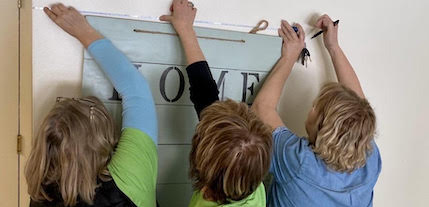

Home
Projects
News
Get Involved

Latest News
Print Articles
Ypsi nonprofit helps furnish quarantine overflow facility in vacant building at St. Joe's hospital
Volunteer group’s mission of making housing a home
Radio interviews
#OTGYpsi: 'House N2 Home' Organization Seeks To Make Homeless Residents Truly Feel At Home
Ypsi charity helps formerly homeless people furnish their new homes